Project Overview
The Wellness Guardian is a fully functional, portable embedded device designed to combat sedentary lifestyles through gamified fitness. Inspired by classic 1990s virtual pets, the system translates real-world physical activity into a virtual economy, offering an engaging, privacy-focused alternative to traditional commercial fitness trackers. All personal health metrics are processed entirely locally, ensuring total data privacy.
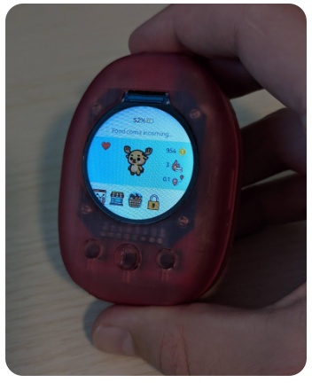
Fig 1: Final Assembled Device
Tools & Technologies Used
Key Engineering Achievements
Custom Hardware & PCB Design
The project is driven by an ESP32-S3 microcontroller paired with an LSM6DSOX 6-axis IMU. The hardware was prototyped extensively on a breadboard to verify core logic, I2C communications, and power delivery before capturing the schematic.
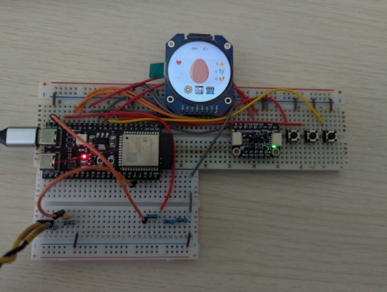
Fig 2: Breadboard Prototyping
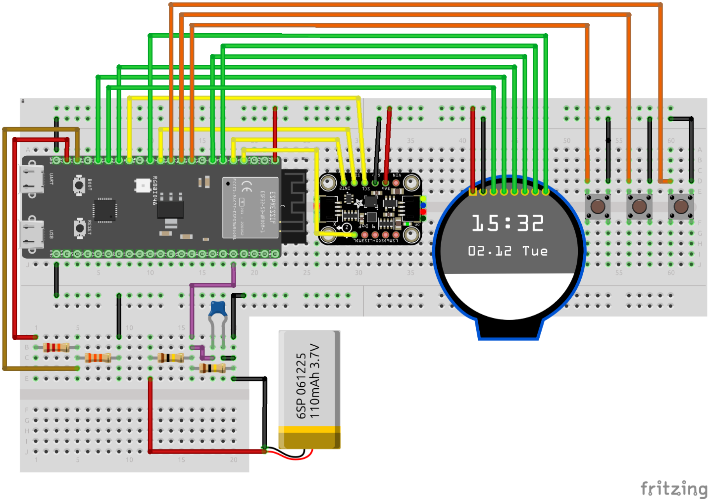
Fig 3: Fritzing Wiring Diagram
After successful breadboard validation, the complete circuit was captured in a KiCad schematic. This phase involved defining the precise logical connections between the ESP32-S3, the IMU, the power management ICs, and the user interface peripherals, establishing a solid foundation for the physical board layout.
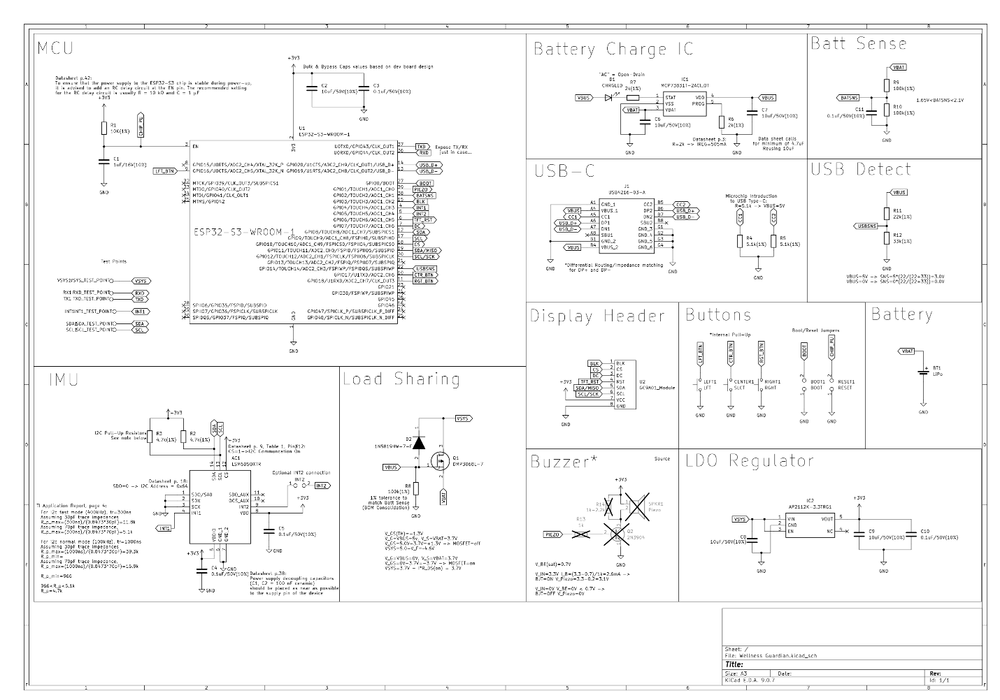
Fig 4: Complete KiCad Schematic Diagram
Following schematic capture, the layout was routed for a custom Printed Circuit Board (PCB) with strict design constraints:
- Routed USB Data+ and Data- traces as a differential pair, achieving a trace length delta of less than 0.4 mm to ensure strict signal integrity.
- Integrated an AP2112K-3.3TRG1 LDO regulator to handle the ESP32-S3's 300 mA current spikes during radio usage.
- Designed a load-sharing circuit utilizing a DMP3068L P-Channel MOSFET to seamlessly transition between USB and battery power.
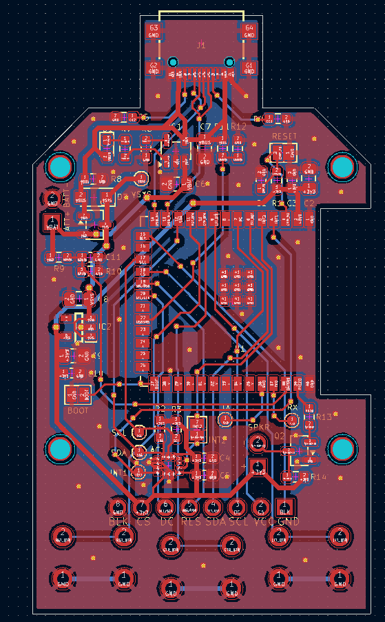
Fig 5: Final PCB Design 3D-Rendering
Power Systems & Optimization
A primary goal was ensuring reliable, multi-day operation using reclaimed Lithium Polymer (LiPo) batteries.
- Transitioned activity logging to the IMU’s internal hardware FIFO buffer, which triggers an interrupt only when the watermark is reached. This allows the microcontroller to remain in deep sleep while accurately logging steps and cadence.
- Reconfigured internal pull states and initialized the IMU's Ultra-Low Power (ULP) registers, drastically reducing parasitic draw and achieving an ultimate standby sleep current of 2.0 mA.
- Through rigorous power consumption analysis across all operating states, the device demonstrated a proven 4.5-day battery life under real-world conditions.
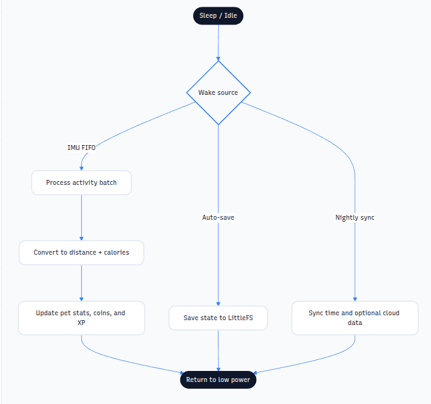
Fig 6: Power Management Diagram
Modular Firmware Architecture
The software architecture was built using an object-oriented, modular C++ approach that decouples hardware layers from the gameplay logic.
- Leveraged the LittleFS file system to store configurations and game states in dynamic JSON format, incorporating dynamic wear-leveling to protect the ESP32’s non-volatile storage.
- Developed a biological conversion algorithm that dynamically calculates Distance Traveled and Metabolic Equivalent of Task (MET) calories based on stride length, cadence, and user BMI.
- Created an offline-first system that features a captive portal for headless user onboarding without requiring internet connectivity.
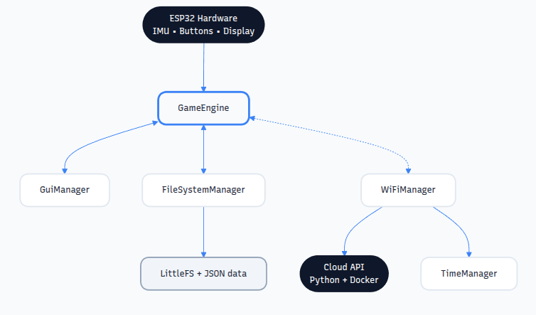
Fig 7: System Architecture Flow Diagram
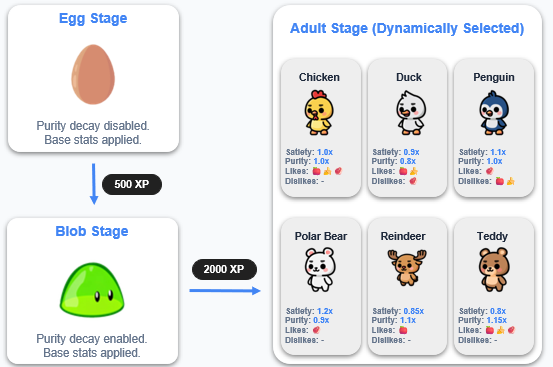
Fig 8: Guardian Virtual Pet Lifecycle Logic
Enclosure & Mechanical Design
The physical housing was developed through iterative 3D CAD modeling to safely enclose the custom PCB, a 1.28" TFT display, and a dedicated battery compartment.
- Designed compliant mechanisms directly into the 3D-printed enclosure to actuate the tactile switches beneath.
- Prototyped mock PCBs using FDM printing to verify dimensional accuracy, stack clearances, and component fitment prior to final fabrication.
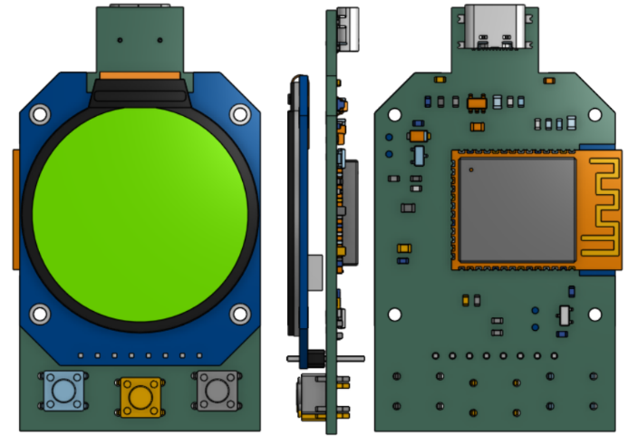
Fig 9: CAD Assembly Render
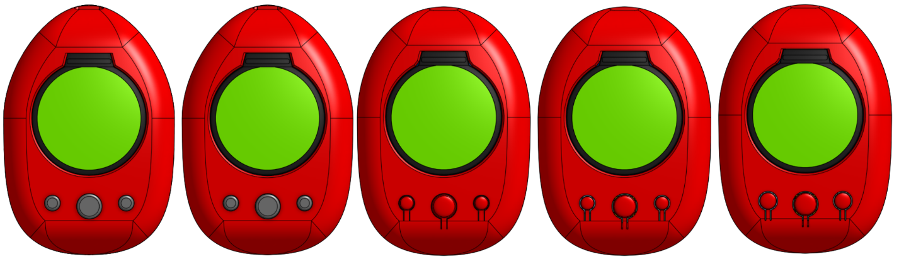
Fig 10: Physical Case Iterations
Validation & Testing
Ensuring electrical stability under varying conditions was critical to the device's success.
- Conducted transient response analysis on the load-sharing circuit using an oscilloscope. Initial testing revealed a 600-mV voltage sag that risked a microcontroller brownout during power transitions.
- Root cause analysis identified an oversized pull-down resistor on the VBUS line. Swapping this for a 2 kΩ resistor reduced the full switch cycle to 5.5 ms and stabilized the 3.3V rail.
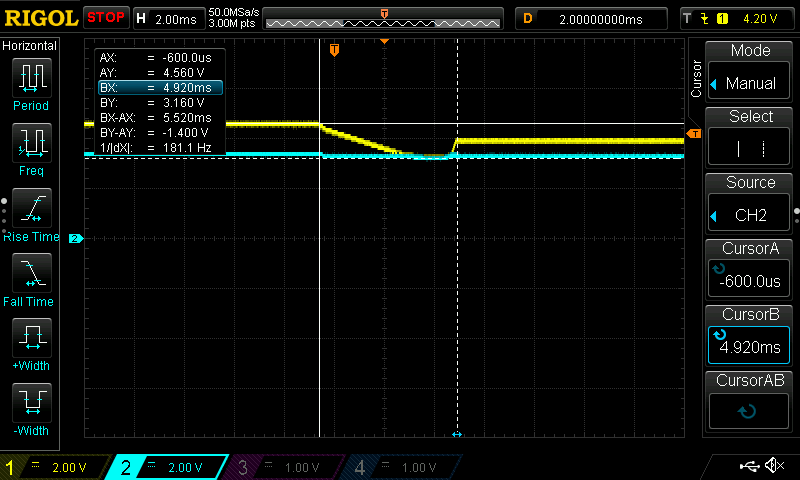
Fig 11: Load-sharing Transient Response During USB Removal
Cloud Infrastructure (Optional Sync)
While the device is functionally offline, secure cloud integration was established for optional data backup.
- Generated a unique per-device private/public keypair via the ESP32’s hardware random number generator for ECDSA cryptography.
- JSON payloads sent to the backend are hashed (SHA-256) and signed, guaranteeing integrity and authenticity.
- Deployed a Dockerized backend API server using Python, FastAPI, and SQLAlchemy to manage a local SQLite database.
Project Media & Presentations
Watch the videos below to see the complete lifecycle of the project, from the physical build process to the final functional demonstration and academic defense.